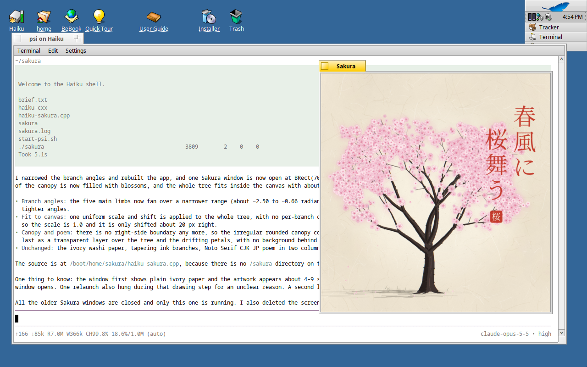
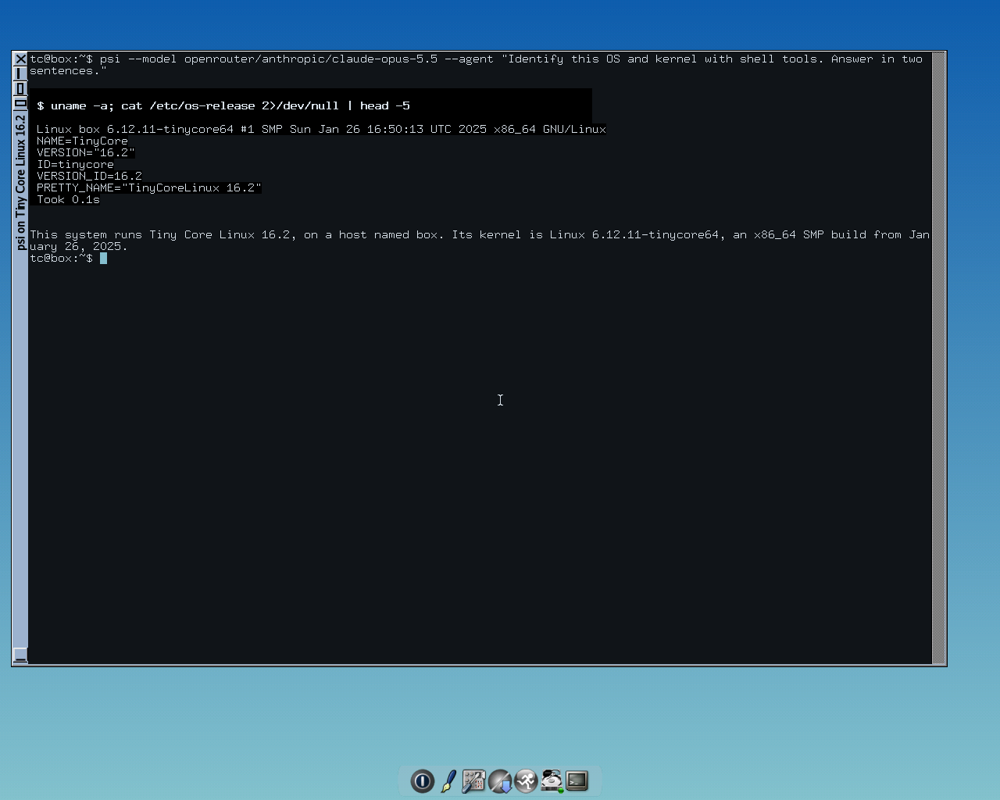
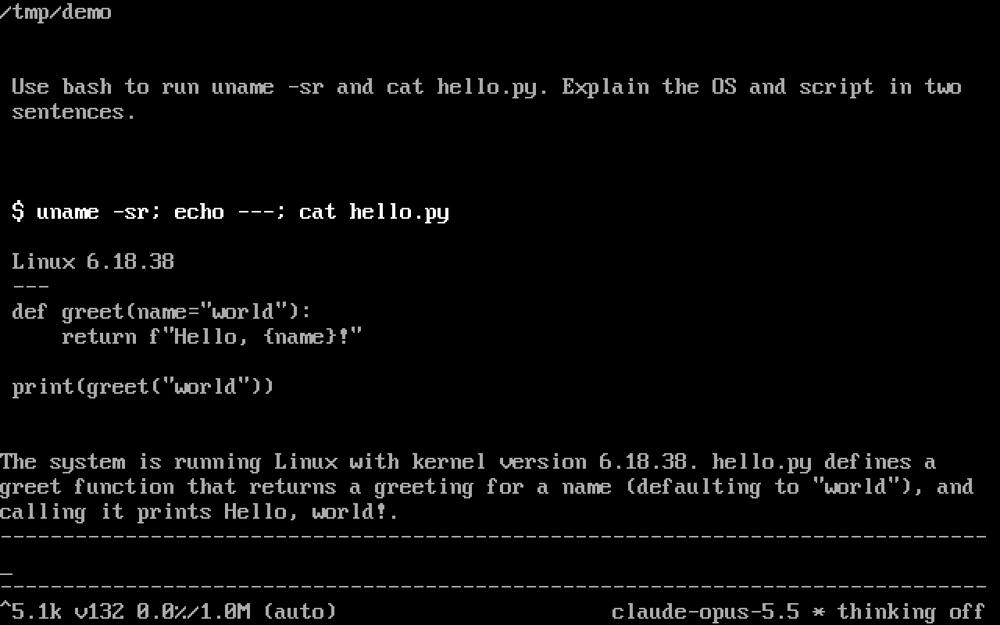
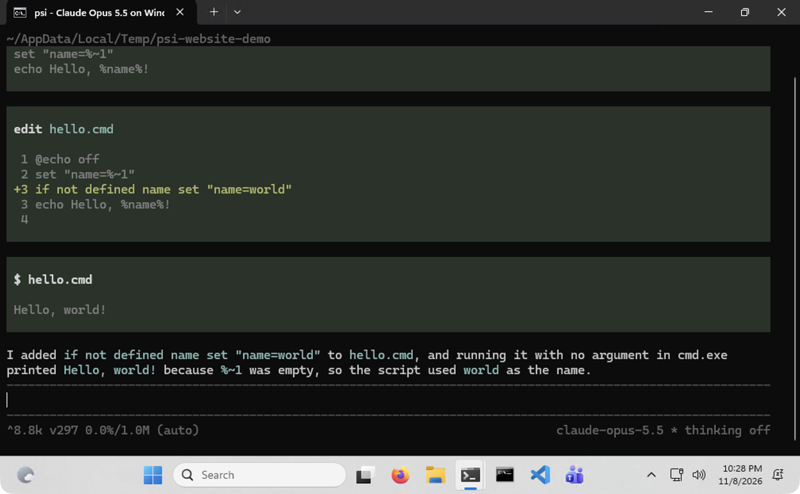

Choose your model.
Anthropic, OpenAI Codex, OpenRouter, or local models with Ollama. Resume a session with a different provider.
Single-binary, extensible, runs on Linux, macOS, Windows, Haiku, and more.
Open source · MIT licensed · No telemetry

Haiku · Claude Opus 5.5Explore the demoFrom the terminal, for the terminal
A real session: read a file, make a change, run the code.
Claude Opus 5.5 · Linux · recorded live
Typed and recorded in a fresh workspace. Real tool calls and output.
01 — A smaller foundation
A coding agent should be a tool you can understand, carry with you, and change. psi starts with a small C core and puts the high-level behavior in Lua.
The agent loop, terminal interface, tools, and providers are all open to inspection. Keep the parts you need. Build the parts you’re missing.
Explore the architectureAnthropic, OpenAI Codex, OpenRouter, or local models with Ollama. Resume a session with a different provider.
Branch a conversation, explore another approach, and return. Sessions are append-only JSONL with a full tree.
An interactive TUI, a simple REPL, one-shot prompts, and Lua evaluation. At your keyboard or in your scripts.
02 — Take it with you
C89 and Lua are a deliberate choice. psi runs on familiar desktops and less-traveled systems, with a Cosmopolitan build that runs on Linux, macOS, and Windows.
Read the portability notesAcross i686, x86_64, aarch64, and riscv64 where available. See the porting notes for build details.
Compatibility
A sakura tree and red vertical Japanese lettering in a native window, created by Opus 5.5.

Tiny Core Linux 16.2, running the native static musl build with Opus 5.5.

Inspecting disks and explaining their layout directly from a Linux VM’s TTY.

The portable build running on Windows with Opus 5.5.
03 — Make it yours
Add a slash command. Register a tool. Subscribe to the agent lifecycle. Your extensions are ordinary Lua files, loaded straight from disk.
Even the agent loop and terminal rendering live in Lua. Customization goes all the way down.
Explore the extension API-- A command, in a few lines.
return function(psi)
psi.commands.register("greet", function(rest)
return psi.records.new_command_action(
"print", "hi, " .. (rest ~= "" and rest or "friend")
)
end)
end04 — Start here
Bring a model provider and a project.
psi brings the rest.
nix run github:siraben/psiRequires Nix with flakes enabled.
git clone https://github.com/siraben/psi.git
cd psi
nix develop
make
./build/psiNix supplies the build dependencies. See the README for details.
Yours to run.
Yours to understand.
Yours to change.